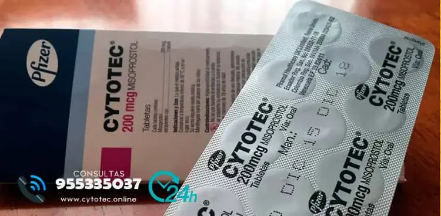
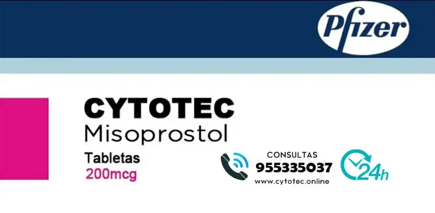
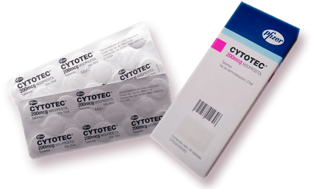

Por más de una década, millones de mujeres en todo el mundo han usado Cytotec Misoprostol para abortos médicos.


-
CYTOTEC®
- Tabletas: Cito protector y antisecretor para el tratamiento de la úlcera péptica (Misoprostol)
- Forma Farmacéutica y Formulación
- Cada TABLETA contiene: Misoprostol 200 mcg. Excipiente, c.b.p. 1 tableta.
Tabletas con 200 mcg de misoprostol sin recubrimiento de color blanco y con forma hexagonal; de un lado, llevan grabadas las leyendas “1461”. -
Síguenos:
Que es Cytotec?
Cytotec Misoprostol es un medicamento que se usa para el tratamiento de las úlceras gástricas y en muchos países del mundo no está registrado para indicaciones obstétricas como la interrupción del embarazo. El Cytotec ha revolucionado la interrupción del embarazo ya que es fácil de conseguir y administrar. En Lima el misoprostrol viene en varias marcas como el Cytotec.
Que hacer luego de usar Cytotec?
Es guardar Reposo? Luego del aborto lo más recomendable es guardar reposo aproximadamente 1 a 2 días luego del aborto, estando en casa en reposo total, esto ayudara a cicatrizar más rápido por dentro del útero donde se produjo el desprendimiento.
www.farmacias-cytotec-peru.shop
Misoprostol

Misoprostol para la interrupción del embarazo en el segundo o tercer trimestre en embarazos complicados
por una anomalía fetal o después de la muerte fetal intrauterina. Para la interrupción del embarazo en
el segundo o tercer trimestre que implique anomalía fetal o muerte fetal intrauterina, el misoprostol
vaginal es más efectivo que el misoprostol oral. Además es tan efectivo como las prostaglandinas
tradicionalmente utilizadas y más costosas, como la PGF2α y el gemeprost, que son más difíciles
de almacenar que el misoprostol, y están asociadas con más efectos secundarios. Dependiendo de
la duración del embarazo, un pequeño saco blanquizco, con tejido alrededor podrá o no ser visto.
Si la mujer tiene de 3 a 4 semanas de embarazo no habrá saco visible. A las nueve semanas, la mujer
probablemente podrá encontrar un saco entre la sangre. El uso del Cytotec es seguro mientras se use
adecuadamente previniendo el no tener problemas de salud.